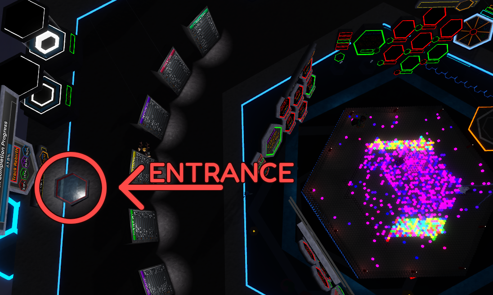
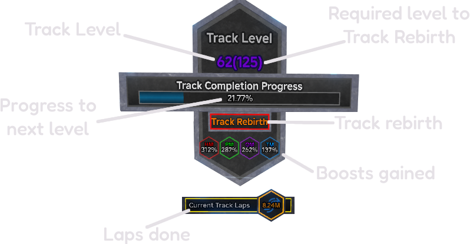

The track unlocks once you get the upgrade on the first Upgrade Tree.
Once unlocked, you can access it through the entrance behind the leaderboards, to the right of the giant Plinko board.
When on the track, your character will run automatically. You can press any button to get off.
Once pressed, it will queue you to drop back down to the main area when you reach the top.
By running on the track, you earn Track Laps and Track Completion Progress.
Track Laps can be used to buy upgrades in the Upgrade Tree.
Once filled to 100%, Track Completion Progress will grant one Track Level.
When your Track Level reaches the required value shown in brackets, you’ll be able to perform a Track Rebirth.
Each time you perform a Track Rebirth, your Track Level resets to 0.
After each Track Rebirth, the requirement increases by 25.
Each Track Rebirth also increases movement speed by 5% and Track XP gain by 25%.
Currently, the Track provides boosts to Hex, Pent, Quad, and Tri.
These boosts increase with your Track Level, but they stop increasing once your Track Level reaches the requirement.
After performing a Track Rebirth, you can continue increasing them.
Track Completion Progress can be sped up by two things.
One is increasing movement speed on the track, which you can do through the Upgrade Tree and Track Rebirths.
The second is increasing the Track XP Multiplier. This can be done through Track Rebirths or by unlocking the perk from Egg 6.